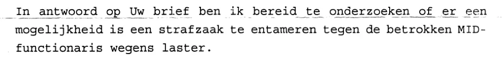

Prueba · Carta
El abogado Gerard Spong a Giltay, 28 de mayo de 1999
El pasaje
«En respuesta a su carta, estoy dispuesto a examinar si existe la posibilidad de iniciar un proceso penal por calumnia contra el funcionario del MID implicado». Página 1, el primer párrafo de la carta. Traducido del neerlandés; el texto original figura a continuación.
Texto original
“In antwoord op Uw brief ben ik bereid te onderzoeken of er een mogelijkheid is een strafzaak te entameren tegen de betrokken MID-functionaris wegens laster.” La carta termina con el nombre mecanografiado «G. Spong»; la firma que figura encima está tachada en la imagen escaneada.

Por qué importa este documento
El 28 de mayo de 1999, el abogado Gerard Spong escribe a Giltay que está dispuesto a examinar si puede iniciarse un proceso penal por calumnia contra el funcionario del MID (servicio de inteligencia militar) implicado. Según el ensayo, Giltay, por consejo de Spong, buscó la vía penal contra las declaraciones hechas sobre él. Cuando a continuación, en julio de 1999, Giltay quiso presentar una denuncia, la policía de La Haya se negó a registrarla, según el libro (edición inglesa, p. 66).
Procedencia
- Documento
- Carta
- Remitente
- Wladimiroff & Spong, abogados, Eisenhowerlaan 102, La Haya; firmada por G. Spong
- Destinatario
- E.F. Giltay, La Haya
- Fecha
- 28 de mayo de 1999
- Referencia
- Giltay/Advies · SP/
- Asunto
- Posibilidad de iniciar un proceso penal por calumnia contra el funcionario del MID implicado
- Idioma
- Neerlandés
- Conservado por
- Archivo del autor
- Véase también
- Jefe de distrito de la policía a Giltay, 26 de marzo de 2000
Citado en: el ensayo «La prohibición cayó, el libro quedó en pie» en el capítulo (3) «Lo que revela el libro: el encubrimiento en torno a Srebrenica».
Ficha de prueba: https://
Documento: https://
Modificado por última vez el 13 de septiembre de 2026, consultado el 27 de noviembre de 2026.

Esta página es una ficha de prueba del libro El general del encubrimiento de Edwin Giltay y del sitio web que lo acompaña.